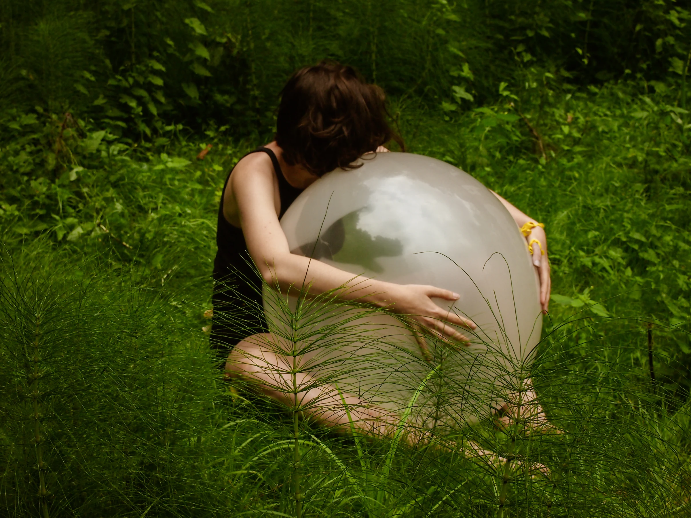
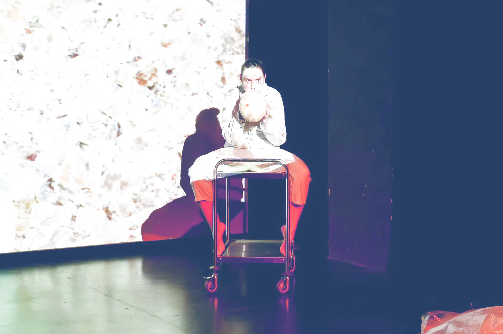

IRAKHARLAMOVA
ARTIST STATEMENT
For me, performance art makes it possible to create alternative connections and interactions with processes and forms that exist in the real world, as well as with those that have never existed. It is a space of creation—from the moment of impulse, through its development, to its destruction.
PERFORMANCE · COLLABORATION · PHYSICAL THEATRE · LIVE ART
SELECTED
WORKS
2017—2025


SELECTED
CV
SELECTED PROJECTS

ABOUT
IRA KHARLAMOVA IS A PERFORMANCE ARTIST WORKING AT THE INTERSECTION OF EMBODIED PRACTICE, MEMORY AND COLLECTIVE ACTION.
Her practice grows from physical theatre, live art and a long-term investigation of the body as a carrier of experience. Her works combine personal gestures, group interaction and spatial situations.
Ira has participated in international laboratories, festivals and projects in Ukraine, Germany and Poland, including Performance Platform Lublin, XCHANGES, ZABIH, Black Market International Exploring and Shards of Normality.
REQUEST FULL CV ↗